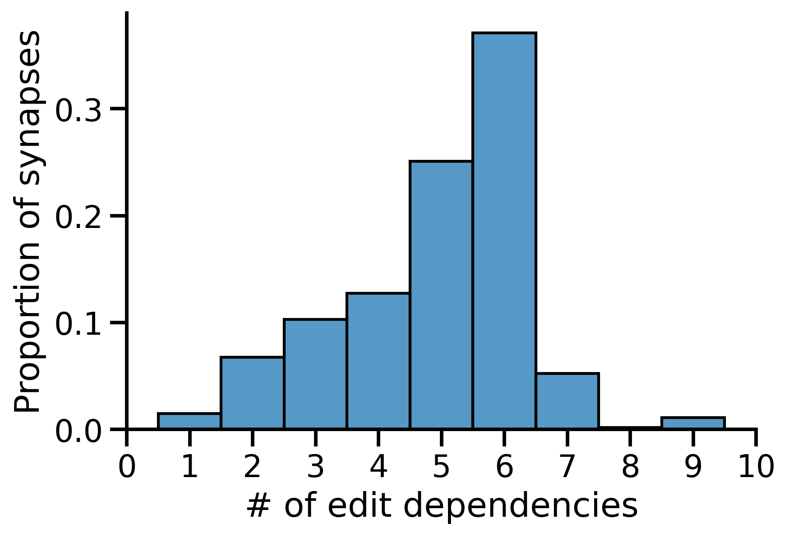
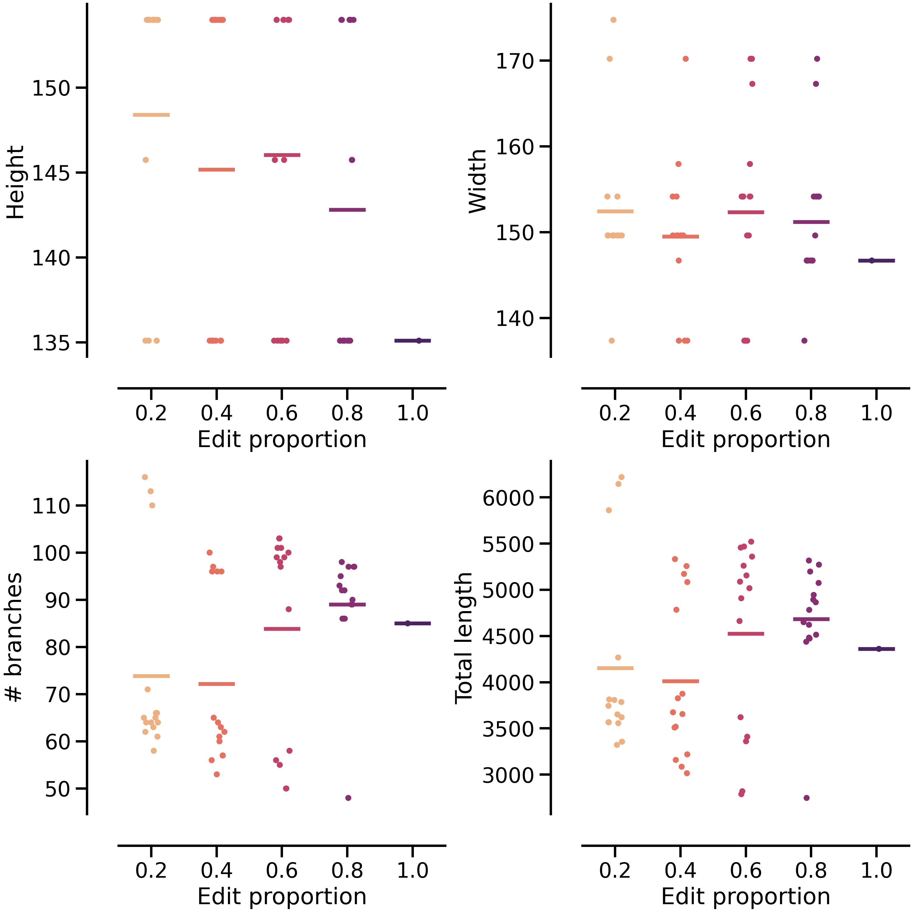

On proofreading and connectome inference
On proofreading and connectome inference {.background-image=“https://raw.githubusercontent.com/bdpedigo/talks/main/docs/images/background.svg”}
Background
- Labor-intensive
- Costly
- Takes time
Proofreading edits
- We have a record of many edits now, across several datasets
- >800K in Minnie, ~2.5 million in V1dd

- How much do they matter for downstream conclusions?
- Can we predict which edits are most impactful?
Aims
- Aim 1 (paper): develop a quantitative understanding of how proofreading affects connectivity
- Characterize which connectivity measures are stable/unstable
- Characterize which edits are impactful
- Aim 2 (system/paper): develop a system for deploying predictions of impactful edits to prioritize for human or automated proofreading
Aim 1: sensitivity to proofreading
- Understand how connectivity features change with proofreading, e.g.:
- Probability cell \(i\) connects to cell \(j\)
- Proportion of cell \(i\)’s outputs onto cell type \(k\)
- Proportion of cell \(i\)’s outputs onto cell type \(k\) in compartment \(c\)
Why do it?
- Know when we should trust connectivity analyses
- How much proofreading to identify a cell’s connectivity type?
- How much proofreading to find long-range vs. short-range connections?
- Know how much proofreading is needed to answer a question
Approach

center h:400
Allows us to examine connectivity for various “what if” proofreading scenarios
Examples: unstable neuron
Differential edit importance
Distal edits and synapses depend on more proximal merges
Comparing edit dependencies
Stable neuron

h:300 center
Unstable neuron
h:300 center
- Develop a system for predicting edit impact to prioritize for proofreading
- May be specific to the question at hand
Why do it?
- Maximize utility of future proofreading efforts given limited resources
Approach
- Use Aim 1 to quantify impact of edits
- Relate morphological features to this impact score

h:300 center
- Test by deploying high-priority edits to proofreaders
Prior work on quality-quantity tradeoff
Would you rather have bit of highly-curated data, or lots of messy data?

h:150 center
Depends on the question, but there exist theoretical cases where you want the latter
Would you rather have a bit of highly-curated data or lots of messy unproofread, biased data?
Analogy to “prediction powered inference”

center h:500
Analogy from “prediction powered inference”

center h:500
Resampling skeletons
- Understand {whether, how} skeleton features are affected by proofreading
- Develop classifiers/clustering methods which are robust to such differences
- E.g. train classifiers on many “messy” neurons
Frankeneuron
features
bg right:65% center h:600
Challenges
- Information already accessible in CAVE, have code for mapping synapses onto their dependant edits
- May need some new API features to make it scalable
- More specific the question, the smaller our sample size for this kind of approach
- Need to assume some kind of homogeneity across the volume for this to work
- May not be palatable to the community
- Feature set for a model on how proofreading errors affect connectivity?
- Results are likely question-specific; unclear to what extent any lessons will generalize
Machine-guided or hypothesis-driven proofreading
Now that we have these connectome volumes, how should we spend our time?
- Algorithm that eats a neuron and predicts completeness
- Algorithm that eats a segmentation and predicts sites for edits
- Better version: eats a segmentation and a statistic, predicts impactful edits
- Find neurons where we need information to assign C-type
- Find edits likely to attach many synapses
Approach
- Develop feature set, ideally reusing relevant tested models (PSS, SegCLR, …)
- Features could involve anything in power set of {image, segmentation, skeleton, skeleton attributes}
- Train {NN, RFC, …} using training set of available edits to predict {edit locations, completeness level, …}
- Validate on held out neurons or subvolume
- Deployment is a tricker question
- V\(0\) Could run predictions on a fixed materialization prior to bout of proofreading
- More elaborate version: predict (edit location, importance)
- E.g. find me edits likely to add many synapses
Challenges
- Little proof-of-concept for feasibility (as far as I know)
- For a random neuron, can we predict where its primary axon might be?
- What if you know something about its cell type, say from PSS features?
- Ditto for predicting completeness from a cell you know nothing else about
- Dynamics: to be useful, would this be running on neurons all the time as they are edited, like the L2cache?
- How would a proofreader interact with such a system?
- Overlap with other work on auto-proofreading?
Thoughts?
Paper on how proofreading affects connectivity estimand
- Have a specific analysis goal, but message could be a general perspective on how to do analysis in light of noisy proofreading
- Side output: defining specific notions of connectivity estimands we care about super clearly
- Connection probability: \(P(i \rightarrow j | i,j)\)
- What we often plot: how cells distribute outputs over output classes: \(P(i \rightarrow j \in K)\), \(P(i \rightarrow j \in K | d_{ij})\)
- Have something that we do expect to fail if there is little proofreading
- Maybe worth keeping this simple…
- Relationship between segmentation error and neuroanatomy
Example differential edit importance
Merge dependency graphs for two neurons, size of node = # of dependent synapses